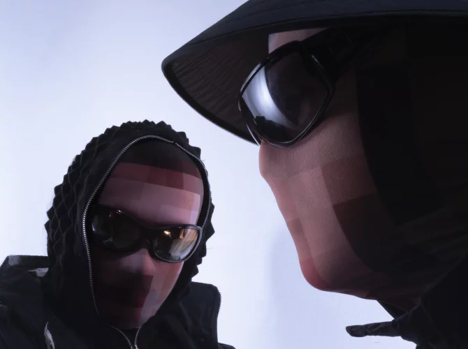

Two Shell is a London-based electronic music duo known for their innovative fusion of UK bass, experimental club music, and hyperpop influences. Their enigmatic presence and forward-thinking productions have garnered critical acclaim and a growing fanbase.
Two Shell's music is a cutting-edge exploration of UK bass and experimental club sounds, infused with hyperpop elements and a playful yet futuristic aesthetic. Their ability to push genre boundaries has made them a standout act in the electronic music scene.
Box thinkers always struggle with Two Shell, the electronic music duo from London. Umbrella terms like dance or electronica are just as anonymous as the duo themselves, but anyone who looks under the hood will find so many components that merely listing them is dizzying. Let alone the way Two Shell pieces everything together, integrates it, and then deconstructs it into one addictive whole, moving from future garage and breakbeat through dancehall, big beat, and jungle to techno, post-dubstep, and hyperpop. Gold. Image by Yushy
Hokjesdenkers hebben het altijd moeilijk met Two Shell, het elektronischemuziekduo uit Londen. Paraplustempels als dance of elektronica zijn al net zo anoniem als het tweetal zelf, maar wie onder de motorkap kijkt komt daar zo veel onderdelen tegen dat alleen al het opsommen ervan je doet duizelen. Laat staan de manier waarop Two Shell alles aan elkaar plakt, met elkaar integreert en weer deconstrueert tot één verslavend geheel, zoals van future garage en breakbeat via dancehall, big beat en jungle naar techno, post-dubstep en hyperpop. Goud. Beeld door Yushy
2
⚤ Mixed